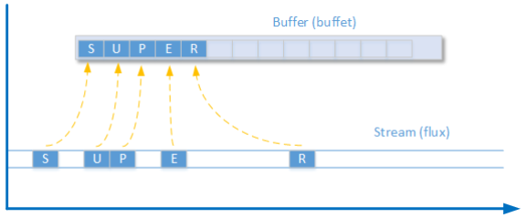

F - Les fichiers
L'objectif de ce chapitre est de savoir utiliser les structures de bases de la programmation avec le langage C#.
Info
Pour faciliter la compréhension du langage nous utiliserons le mode console.
En C#, la plupart des périphériques sont considérés comme des flux entrants et sortants. Cela signifie que si le flux n’est pas mémorisé, les données transmises sont perdues (un peu comme une chaîne en direct : si vous êtes absent de l’écran, les informations sont perdues).
Comme la plupart des périphériques acceptent les entrées et les sorties, cela multiplie par deux les flux et buffets à déclarer.
ATTENTION
la lecture d’un flux vide entraîne la génération d’une exception qui bloque l’exécution du programme.
Ainsi, la plupart du temps (et c’est aussi vrai en Java), il faudra ouvrir le flux et ouvrir un buffer :
- Ouvrir le flux du fichier
- Ouvrir le buffet du flux du fichier
- Lire/Écrire dans le buffer
- Fermer le buffer
- Fermer le flux
Code pour la lecture dans un fichier :
using System;
namespace FileReadExample
{
class HelloWorld {
static void Main() {
FileStream monFlux = null ; // Créer un objet flux (en direct)
StreamReader reader = null; // Créer un objet lecteur de flux (bufferise)
string fileContent = "";
try
{
// Ouverture
monFlux = new FileStream(@"e:\test.txt",FileMode.Open);
reader = new StreamReader(monFlux, Encoding.UTF8);
// Lecture
Console.WriteLine("Votre fichier contient : ");
fileContent = reader.ReadToEnd();
Console.WriteLine(fileContent)3
}
catch (Exception ex)
{
Console.WriteLine("Erreur de lecture !"+ex.Message);
}
finally
{
// Fermeture
if (reader != null)
{ reader.Dispose(); // Fermer le buffer (libère sa mémoire)}
if (reader != null)
{ monFlux.Dispose(); // Fermer le fichier (libère 1e canal)}
}
}
}Code pour l'écriture dans un fichier :
using System;
namespace FileReadExample
{
class HelloWorld {
static void Main() {
FileStream monFlux = null ; // Créer un objet flux (en direct)
StreamWriter writer = null; // Créer un objet lecteur de flux (bufferise)
string fileContent = "";
try
{
// Ouverture pour ajouter une donnée
monFlux = new FileStream(@"e:\test.txt",FileMode.Append);
using (writer = new StreamWriter(monFlux, Encoding.UTF8));)
{writer.WriteLine()"Ecriture d'une ligne"; // Ecriture}
Console.WriteLine("L'écriture s'est correctement réalisée ");
}
catch (Exception ex)
{
Console.WriteLine("Erreur de lecture !"+ex.Message);
}
finally
{
// Fermeture
if (reader != null)
{ writer.Dispose(); // Fermer le buffer (libère sa mémoire)}
if (reader != null)
{ monFlux.Dispose(); // Fermer le fichier (libère 1e canal)}
}
}
}